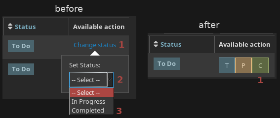

theme is a dark theme for myschoolapp.com. it restyles all colors to the base16-default-dark color scheme, which is white on black and also used on this page. additionally, it normalizes fonts so that only one font is ever used on the entire site, as opposed to the 6239581264 fonts that the folks at Blackbaud for some reason decided were necessary. finally, it removes terrible bad things that suck, such as unnecessary animations, shadow effects, and boxes with rounded corners. you can get it for Firefox or Chrome via userstyles.org.
behavior is a collection of several patches that improve various aspects of the site. firstly, it reduces the number of clicks needed to change the status of an assignment (to do, in progress, completed) from 3 to 1, like so:  it automatically sorts assignments by due date as well, the way most sane human beings would find to be actually useful. it also replaces distracting animated images on topics pages with still images (sorry, Dr. Harris). you can get it by installing Greasemonkey for Firefox or Tampermonkey for Chrome and then clicking the following link: myschoolapp-behavior.user.js.
app is, unsurprisingly, an Android app. its sole feature is the ability to access the list of assignments. the design is as compact as possible, using custom two-letter abbreviations for each class (which are requested after initial login and can be changed at any time by tapping in the left column on one of the abbreviations). tapping the assignment name will show its details, and assignments are automatically sorted by due date. tapping on the status will cycle between to do, in progress, and completed. login information is saved forever after you login for the first time, and swiping downwards refreshes the list of assignments. you can get it by downloading myschoolapp-app.apk.